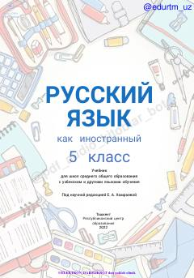

RT5-sinf o'quvchilari uchun rus tili fanidan o'quv darsligi.
Ushbu darslik O'zbekiston umumiy o'rta ta'lim maktablarining 5-sinf o'quvchilari uchun rus tilini chet tili sifatida o'qitishga mo'ljallangan. Kitob o'quvchilarda tinglash, gapirish, o'qish va yozish ko'nikmalarini rivojlantirishga qaratilgan bo'lib, turli loyihalar va interaktiv materiallarni o'z ichiga oladi.